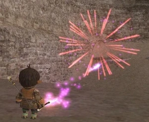

Level 75 reference · Zenith rules

StatisticsMuteppo |
Other UsesResale Price: Cannot be sold to NPCs. |


How to Obtain
Dispensed From
Adapted from Eden Wiki: Muteppo · Contributors and history · CC BY-SA 4.0. Revision 43381. Layout, links and optional background text adapted for Zenith.